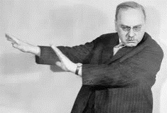
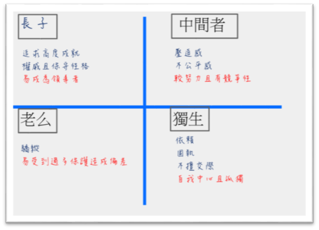

一、代表人物：Alfred Adlert
- 出生於維也納的一個富裕的家庭，家中排行第二
- 幼年時體弱又曾罹患肺炎，加上有一名各方面都比他優秀的哥哥，小時候就深刻體會過自卑感
- 罹患肺炎的淨利讓他立志成為一個醫生
- 在讀過佛洛伊德的《夢的解析》後深感認同，從此投入精神醫學的研究並加入精神分析學會，在其後的十年間成為精神分析學會的重要人物
- 因跟佛洛伊德在理論上出現分歧而受到打壓，出走精神分析學會之後建立了個體心理學會
- 在將個體心理學建立完成的同時也不斷尋訪演講，影響了後世許多的心理學理論與哲學
二、基本觀點
（一）人性觀——自卑感
- 身為人一定都會有自卑感
- 對於「現實中的自己」與「理想中的自己」或「他人」之間的差距，人會產生自卑感
- 個人的自卑感也可能成為人類發展的原動力：補償行為
- 自卑感朝向負面作用：
- 自卑情結：開始把自卑感當成某種藉口使用，過度沉浸自卑感的狀態
- 優越情結：表現得自己好像很厲害，沉浸在虛偽的優越感中，然而其優越感也是出於自卑感
（二）主觀現實
- 對現實的主觀知覺：重視人們知覺外在世界的獨特方式，試圖由當事人的主觀架構來瞭解他對外在世界的看法
（三）整體性
- 個體心理學強調個人的整合性與不可分割性
- 全人概念holistic concept：無法單從部分就被他人了解全部（家庭、文化、工作）
（四）目的論
- 目標導向（目的性）
- 個體心理學假設人類行為均是有目的的
- 哲學家Hans Vaihinger 人們是依循虛構的想像來活著
- 虛構目的論
- 理想自我導向＝追求完美
- 引導個人行為的目標其實是想像的產物
- 決定論vs目的論
- 決定論（佛洛伊德）：找藉口說明為什麼是現在這個樣子，受過去的經驗制約而行動。
- 目的論（阿德勒）：決定自己想要成為什麼樣子，主動設定方向向前邁進。
- 應該追究的，不是過去發生了什麼事情導致現在的結果（決定論），而是現在的目的為何（目的論）。
- 重要的不是你經歷了什麼，而是你如何運用它。
（五）社會興趣
- Adler認為社會興趣是與生俱來的
- 無法找出有哪個人，當他說「我完全不在乎」時是100%真心的
- 社會興趣＝認同感＋同理心
- 社群感根植於全人類的過去、現在、未來
（六）出生序
- 並非命定，但會增加個人某種特定類型經驗的可能性
- 家中地位詮釋＞實際出生序

- 個人的發展：出生序＋早期社會互動→自己的生活風格
三、治療應用
（一）治療關係建立
- 平等同盟的協助
- 傾聽並重視個人「主觀」意見
- 主觀經驗勝於諮商技術運用
（二）評估與探索
- 目標：對生活型態(Life Styles)了解
- 主觀性晤談：讓個案說自己的故事
- 客觀性的晤談：蒐集關鍵資訊
- 問題是怎麼出現的？社交狀況？做過的治療？
- 生活型態評估：探問早期記憶以及家庭星座，收集生活型態整體資料。
- 早期回憶
- 記憶只是個人生活型態的表徵
- 記憶的真實性不重要，重要的是你如何解讀記憶
- 在大量記憶中能被提取的肯定有意義

- 家庭星座
- 評估個案早期家庭系統中優勢條件、出生序、親子關係、文化影響。
- 每個人都會受原生家庭中的家庭星座來形塑自己的人格。
- 社會心理的先驅
- 問卷收集資料
（三）洞察自我（覺察目的）
- 阿德勒的治療法會針對當事人對種種發現的詮釋來作催化當事人產生自我瞭解和領悟。
- 領悟：是瞭解當事人生活中所不斷運作的動機是什麽。（只有在當事人瞭解到自己行爲的目的是什麽的時候，自我瞭解才有可能產生）。
- 領悟會不斷地產生且不會隨著治療結束而消失，並且是行動改變的基礎。
- 詮釋(interpretation)：一種催化當事人獲得領悟的技巧
- 它的焦點在於此時此地的行爲表現下的内在動機。
- 詮釋是一種不著痕跡的的建議，以開放式詢問的形式提出來和當事人一起探討。
- 開放式的提問可以減低當事人的自我防衛，更放鬆的與諮商員討論。
（四）（重新定向）再教育
- 行爲導向階段
- 治療過程的最後階段，既是協助當事人將領悟化爲行動。
- 在這個階段，當事人可以選擇較早的治療過程中所獲得的領悟爲基礎來形成新的生活形態或重新定向。
- 重新定向
- 人際互動模式，成長經歷與動機的内在規則之改變
- 這些改變是經由改變當事人的自我察覺而出現的
- 諮商與心理治療的核心
- 鼓勵過程
- 在重新定向的過程中，鼓勵是最重要的介入
- 鼓勵（encouragement)的字面意思是生出勇氣(to build courage) , 鼓勵可以讓人更有勇氣去面對生活中的各種困難
- 因為當事人大多看不到也不能肯定自己的正向特質和優勢能力，所以在這個過程中治療師最主要的目的就是協助當事人發現自己的資源與優勢能力所在。
- 改變與找出可能性
- 當事人修正生活目標並做出抉擇後，當事人會被要求去注意自己正在重複哪些使得行動無效的舊模式。
- 當事人真正的改變是發生在治療間而不是治療本身，因此鼓勵當事人將在治療中所學到的應用到生活中是非常重要的。
- 製造不同
- 諮商員會要當事人在生活中做些不同既往的行爲。
- 這些不同可以是在行爲上，態度上或者直覺上一點點的改變。
- 借由不同的技術來促使當事人改變。
- 例如：傾聽與反應技巧、按鈕技術（踩當事人痛腳）、角色扮演